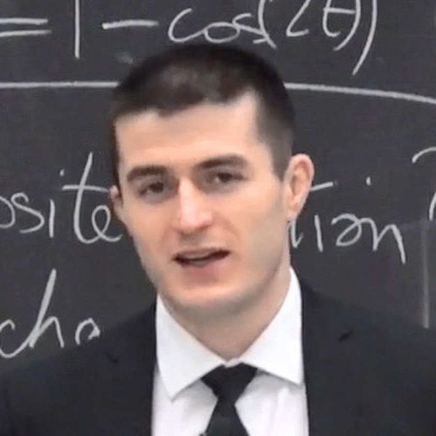
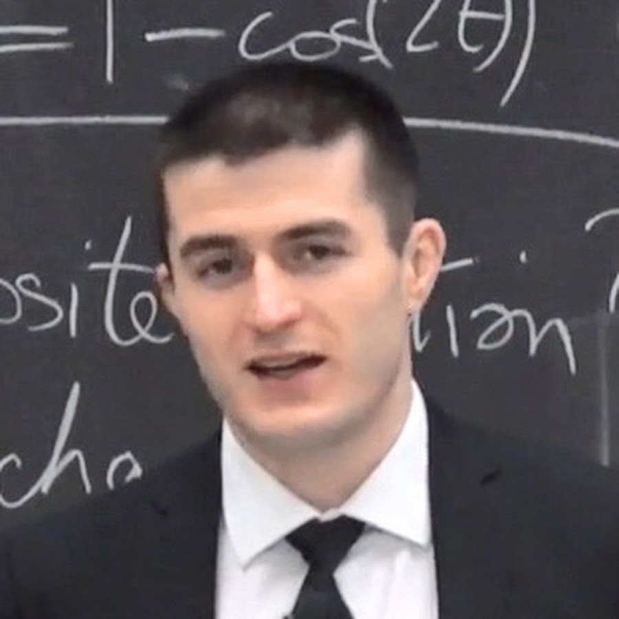
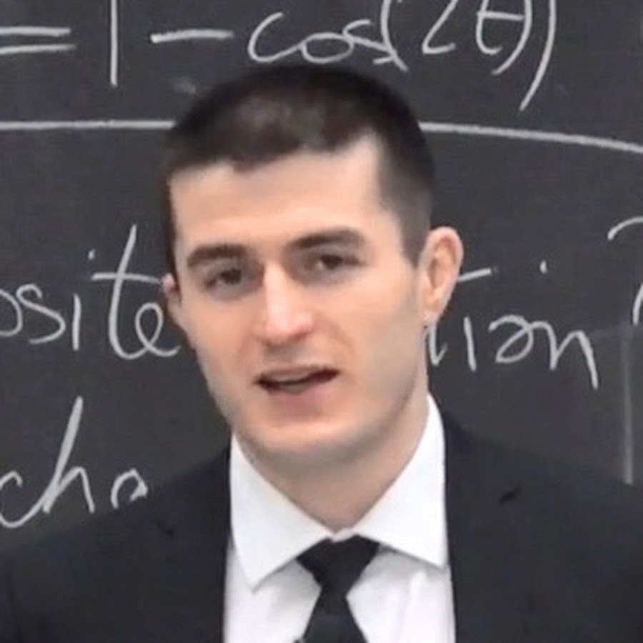
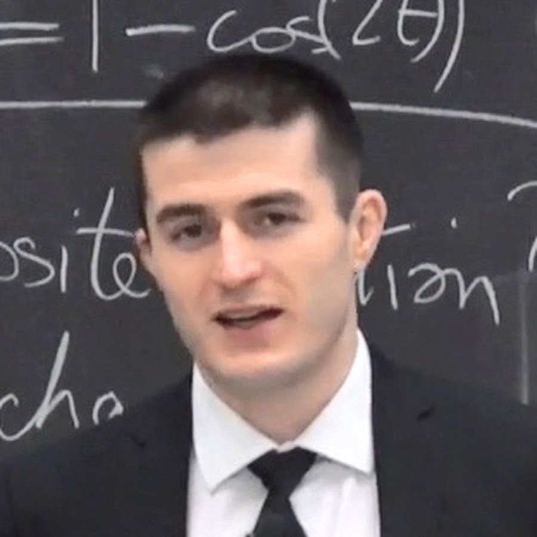

Explore Learning and Career Paths
 



A brief intro to the world of computer science for all the new freshman joining college this year with few tips to start and explore.
A few research papers are also given below to tell you how mine and your's favourite thing, that is ChatGPT works like magic.